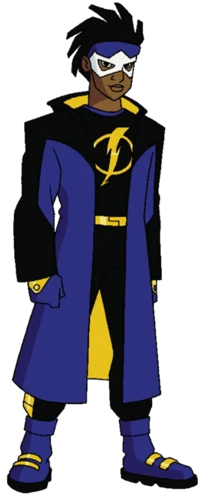

Ele vai soltar um choque no seu sistema! Conheça a história e as habilidades de um dos maiores heróis da Milestone e da DC Comics.
Criado originalmente por Dwayne McDuffie, Denys Cowan, Michael Davis e Derek T. Dingle na Milestone Media em 1993, Virgil Hawkins era um adolescente comum de 14 anos vivendo na cidade de Dakota. Tudo mudou quando ele foi pego de surpresa no meio de uma guerra de gangues e acabou exposto a um gás mutagênico experimental, um evento marcante conhecido como o "Big Bang".
Esse gás alterou sua estrutura celular, concedendo-lhe habilidades eletromagnéticas extraordinárias. Inspirado por gibis e querendo fazer a diferença em sua comunidade contra outros mutantes que usavam seus novos poderes para o crime (os chamados "Meta-Humanos"), Virgil assumiu a identidade de Super Choque (Static Shock). Anos mais tarde, o universo de Dakota se fundiu ao universo principal da DC Comics, permitindo que ele lutasse ao lado dos Jovens Titãs e da Liga da Justiça.
Capacidade de gerar, absorver e controlar energia elétrica e campos magnéticos à sua vontade.
Utilizando tampas de bueiro ou seu famoso disco metálico retrátil, Virgil consegue magnetizar objetos para voar e planar em alta velocidade.
Ele consegue concentrar sua energia elétrica para derreter, cortar ou soldar estruturas metálicas com extrema precisão.
O Super Choque consegue ouvir e rastrear ondas de rádio, linhas telefônicas e sinais de internet usando sua bioeletricidade.
O herói ganhou o coração dos brasileiros nos anos 2000 por causa da exibição em massa de sua série animada na TV aberta, tornando-se um ícone da cultura pop no país.
O nome civil do herói, Virgil Hawkins, é uma homenagem direta a um advogado afro-americano real que lutou pelo direito de pessoas negras ingressarem nas faculdades de Direito na Flórida.
Devido à alta atividade elétrica em seu cérebro, a mente de Virgil é incrivelmente difícil de ser lida ou controlada por telepatas.